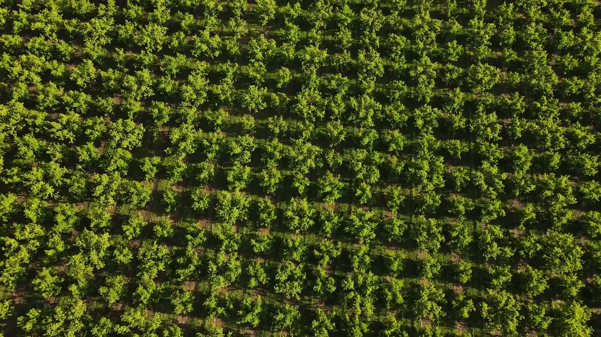
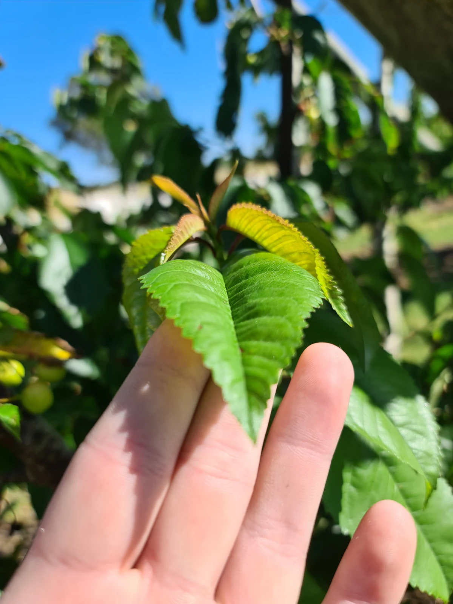
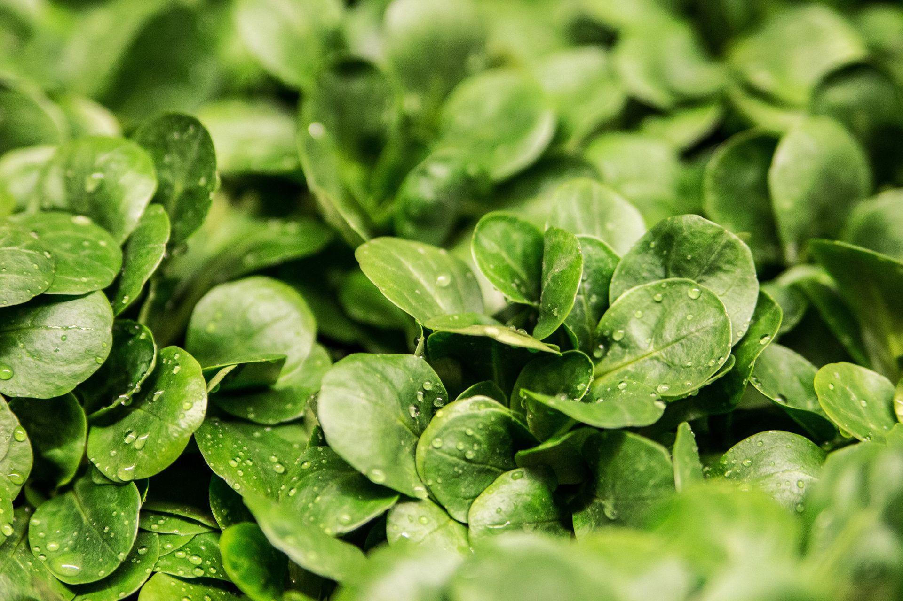
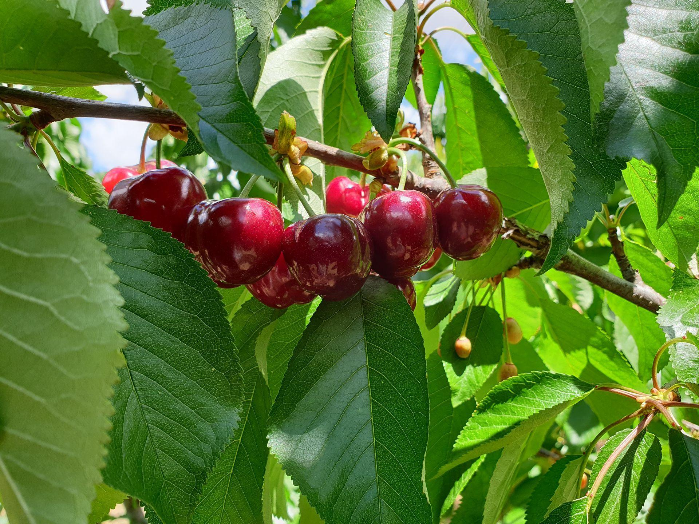
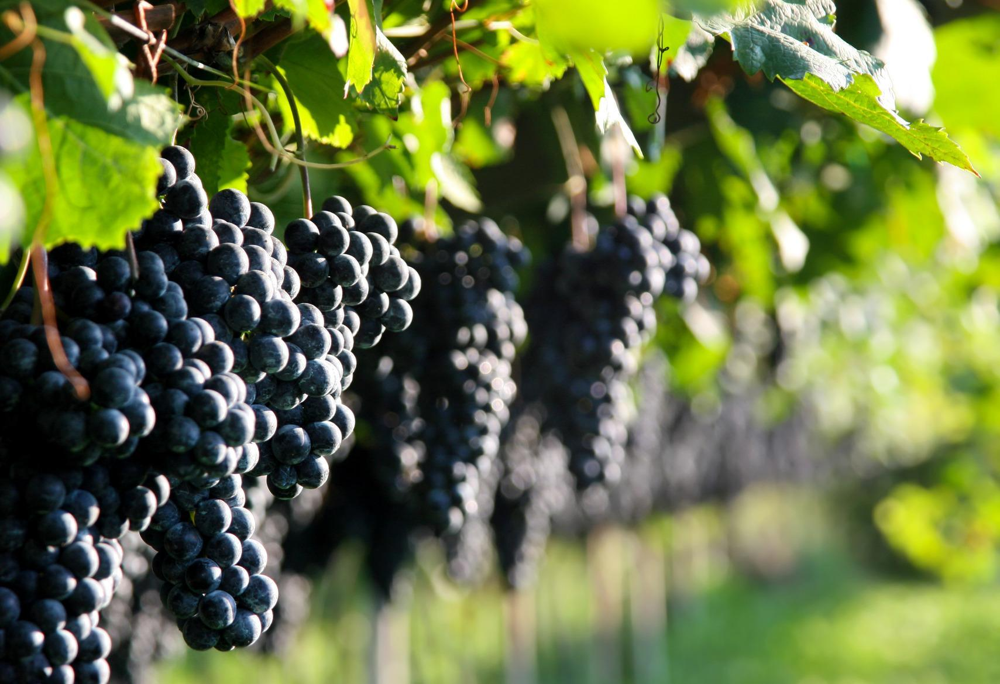
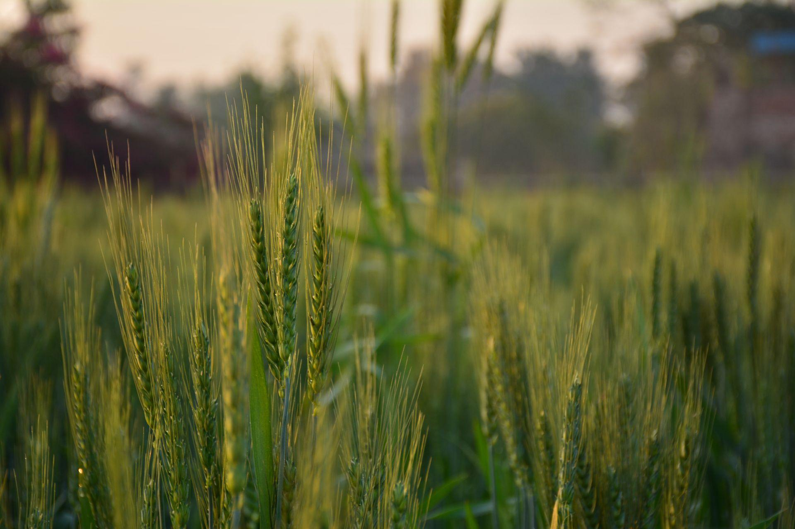

Precision Nutrition
Total soil and plant nutrition input systems customised for broadacre, horticulture, viticulture and small crop growers
Soil & Leaf Testing
We’ve built our business on testing rather than guessing, customising all our nutrient programs, and sharing our research and knowledge.


Small Crop
Grow healthier and more resilient crops with customised nutrient programs.
Learn More about Small Crop
Horticulture
Access nutrition management techniques and tailored solutions.
Learn More about Horticulture
Viticulture
Maximise your vineyard’s potential through tailored solutions.
Learn More about Viticulture
Broadacre
Boost yields and set your crops up for success with a customised nutrition program.
Learn More about Broadacre